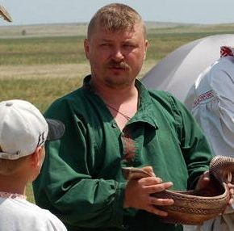

|
||||||||||||||
Базлов Г.Н. "Мифология ножа" В мужских объединениях - партиях, артелях, каждый боец обязан был носить с собой нож или кинжал, изготовленный специально для боевого применения и более нигде в хозяйстве не применяемый. Нож отличался односторонней заточкой, кинжал двусторонней - "двузаправленный". Применение и ношение ножа строго регламентировалось. Известны три основные способа ношения: один - на поясе, второй в голенище сапога, третий - в кармане на груди. Нас, в первую очередь, интересует положение - "на поясе", так как мы считаем его обрядовым и более древним (До запрещения носить холодное оружие ножи предпочитали носить у пояса). Во время обряда ножи зачастую демонстрировали, вывешивая на пояс, в то время как в будни его носили скрытно. Вывешивание ножа (кинжала) на пояс было весьма функциональным в военное время. Повсеместно в Тверской области подчёркивают связь боевого ножа с понятием о мужском достоинстве, чести, мужестве. Запрет на ношение ножа воспринимался как оскорбление мужского достоинства. Атрибутом мужского начала нож (кинжал) предстаёт в малых фольклорных жанрах, причём образ конкретизируется сопоставлением с мужским детородным органом: "Что у казака повыше колена, пониже пупка?" Ответ: кинжал. По всей видимости, архаическому сознанию близка ассоциация поясного ножа-кинжала и мужского начала. Весьма яркой иллюстрацией нашего предположения являются "скифские" (сколотские -?) идолы VI - V вв. до н.э., оформление которых подробно рассматривает академик Б.А.Рыбаков в книге "Язычество древней Руси". У них у всех при общей скупой обработке и минимальном наличии атрибутов (шейная гривна, рог - ритон) необычайно тщательно изображён нож (кинжал), расположенный на месте мужского детородного органа, как бы заменяя его качественно более высоким образом мужского воинского начала. На некоторых их них не изображаются даже черты лица, но нож обязателен ибо он характеризует качество изображённого субъекта. Весьма характерным обрядовым вызовом на бой, распространённым почти повсеместно в области, было втыкание ножа в землю (если обряд на улице, и в матицу - если в избе). Происходило это следующим образом: в конце второго этапа обряда один из бойцов, исполняя боевой танец под обрядовый наигрыш "на задор" с характерными припевками, приближался к тому, кого он желал видеть своим соперником и втыкал перед ним в землю свой нож, после чего тот выходил на обрядовый пляс, перерастающий в обрядовый бой. Брошенный и воткнутый нож, в качестве символа вызова на бой, начала вражды, мы встречаем уже в Повести временных лет- "...Володимер же (...) посла к Давиду и к Олгови Святославичема, глаголя: "Пойдите к Городцю да поправим сего зла, еже ся створи се в Руськей земли и в нас в братьи, оже ввержен в ны нож ( т.е. - ведь брошен между нами нож) Да аще сего не правим, то большее зло встанет на нас, и начнет брат брата закалати, и погибнет земля Руская,...". Интересно, что в "Повести", для описания распри применены образные аналогии с ритуальным поединком на ножах. Вероятно, в те далёкие времена такие сравнения были совершенно понятны потенциальному читателю. Какое толкование мы можем предложить в качестве древнего смыслового обоснования этого ритуального действия? Сразу же, со всей очевидностью перед нами предстаёт оппозиция мужского и женского начала. Давно сложилось единодушное мнение учёных об обожествлении земли славянскими народами: мать - сыра земля, родная земля, родина мать - земля русская. Говоря об этом, мы обязаны внести некоторое уточнение. Женское - рождающее, - начало земли воспринималось не только, и не столько в сексуальном плане, сколько в эпическом. Иными словами, это не то восприятие женского начала, которое связано с удовлетворением сексуальных потребностей, а отвлеченное, космическое, всеобще рождающее. Точно таким же - эпическим, - мужским началом, как мы выясним, традиционно наделяется поясной нож (кинжал). Описывая обрядовое соединение этих двух эпических начал: мужского ножа - кинжала, и женского матери - земли, мы должны постараться удержаться от соблазна описать этот акт простой ассоциацией с половым актом или обрядом плодородия. Ранее мы уже выяснили, что мистерия переводит все образы обычного плана в мир ноуменозных сущностей, возвышая оценочную характеристику любого действия, преломляя его в мир волшебный. Мы должны задать вопрос следующим образом: что должно родиться в результате этого акта эпического слияния начал? Совершенно определённо, что мужское эпическое начало ножа (кинжала) связано не столько с конкретным человеком, сколько с образом космического начала мужчины - воина. Поэтому сам боец, втыкающий нож, участвует в акте ритуального единения начал лишь номинально - постольку - поскольку. Это акт соития небесного мужского духа и земного - женского. "Небо - отец, Земля - мать, а ты трава, позволь тебя рвать" - заговор на выкапывание травы в ночь на Иванов день. В результате, видимо, должен родиться (переродиться, преобразиться) сам боец или его соперник. Он входит в родство с Небесным Отцом и Земной Матерью и получает от них силу и поддержку для эпического подвига в чудесном мире, не случайно, попав в беду, богатыри просят силу у матушки - сырой земли, и силы сразу "вдвое прибывает". Интересный аналог втыканию ножа в землю находим в сказке, где нож-кинжал заменён стрелой. Стрела тоже может выступать знаком мужского начала. Вспомним, как с помощью стрел в сказе "Царевна-лягушка" братья ищут себе невест. Так что параллель правомочна и интересна. В сказке "Иван кобыльников сын" читаем: "Вот что дитя! Доспей лук и стрелку. Ходи поляничай и к ночи ставь стрелку в землю. Я буду знать, что ты живой; а не будет стоять стрелка, я буду ходить искать твои коски". Опять напрашивается физиологическая параллель. Хочется сравнить стоящую стрелку с эрегированным членом, так как в народной медицине эрекция является признаком выздоровления, жизненной силы, отсутствие - умирания, утрачивание яри - жизненной энергии. Но мы с вами уже уговорились рассматривать волшебные события в свете волшебных представлений. Способность воткнуть стрелку или нож и сохранить в стоячем воткнутом состоянии - значит сохранить статус волшебного воина, обеспечить право доступа к силе, исходящей от Земли - Матери и Отца - Неба. Связь воткнутого ножа с образом жизни и смерти воина иногда выражена в сказке значительно конкретнее: "Он взял нож и воткнул в стену, под ним на пол поставил чашу, а младшим братьям сказал: "Сегодня вы не спите, вот вам карты - сидите играйте; как ИЗ НОЖА В ЧАШКУ КАПНЕТ КРОВЬ, вы отвязывайте моего коня и отпустите его." Здесь явно отождествляется нож со своим владельцем, герой начинает терпеть поражение и нож начинает истекать кровью. Подобная ритуальная практика была зафиксирована нами в экспедиции 1998 года в Помостье. Для того чтобы дорога у путника была удачной, перед его выходом из дома втыкают в дверной косяк нож, веря в то, что пока нож не вытащен и с путешественником ничего плохого не произойдет. Необходимо отметить, что иной раз, наряду с отождествлением оружия со своим владельцем, традиция одухотворяет оружие (нож, трость) и наделяет его как бы собственной волей, отстранённой от воли хозяина. Финка- ножик, финка- ножик. Мой кинжалик - острый шарик |
||||||||||||||